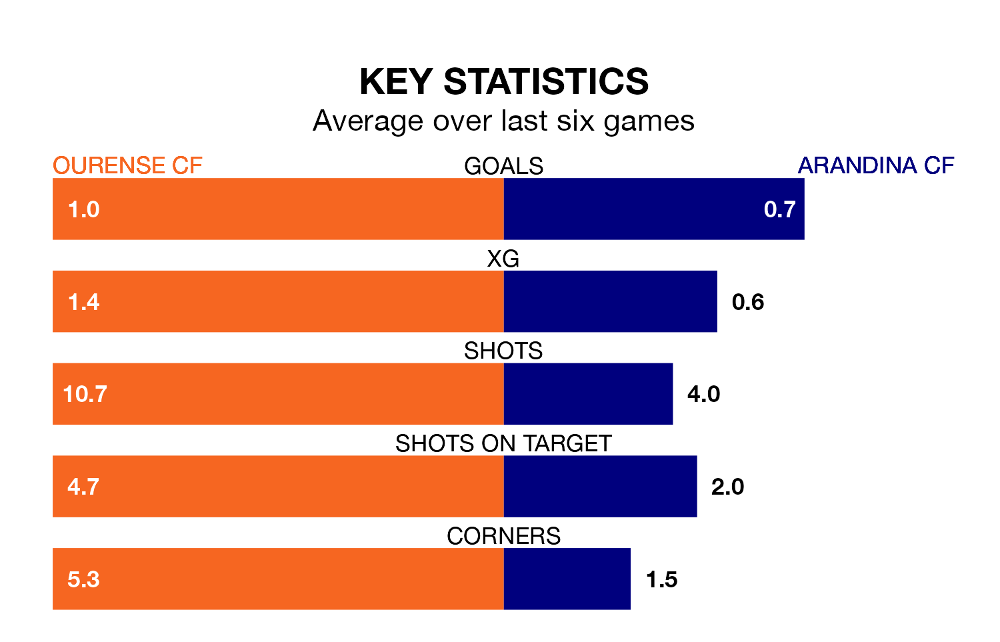

Mid-season relegation candidates Arandina CF face a challenge away against high-flying Ourense CF at the Estadio Mpal De Oira on Sunday.
Arandina CF are rooted to the bottom of the Segunda División RFEF Group 1 table, and have picked up two wins and six draws in their 19 games to date.
Ourense, meanwhile, are second in the standings with 39 points, having won 11 and drawn six, and are level on points with table-toppers Pontevedra CF.
With 15 goals in 19 games so far this season, Arandina are the league's joint-second-lowest scorers with 0.8 goals per game. And they are conceding more than average, letting in 28 goals at a rate of 1.5 per game.
Ourense, meanwhile, are above average scorers, with 1.3 goals per game, compared to a league average of 1.1. They have conceded 0.5 goals per game.
The home side are in mixed form in Segunda División RFEF Group 1, with two wins and three draws from their last six games.
With no wins and three draws over that period, the visitors' form is much worse – they have taken three points from 18, compared to Ourense's nine.
Ourense's last match was on Sunday, a 0-0 draw against Club Marino de Luanco.
Arandina drew 0-0 with SD Compostela last time out, on January 20.
Updated: 09:18 (UTC), 23/01/24